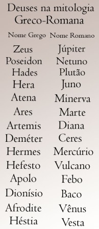

São eles que lutam contra ou pelos deuses; Os deuses sozinhos não podem interferir no rumo da história, por isso eles usam os heróis como peças para fazerem as tarefas que eles não podem executar sozinhos. Um Herói é um filho de um humano com um deus, ou seja, um semideus. Os heróis ou semideuses nada mais são do que humanos com poderes especiais, normalmente associado a função que eu progenitor divino exerce; Um filho de Poseidon com um Mortal vai ter poder de controlar as águas e de falar com cavalos, um filho de Atena vai ter o poder da inteligência e de fazer escolhas sabias, um filho de Afrodite vai ter a beleza e o poder de atração do sexo oposto…
O herói apesar de ter uma metade divina ele é mortal, por descender do homem. Existe também ecessoes, como por exemplo, Aquiles, que nasceu mortal, mas foi banhado no rio Estige, o que deu a ele seus poderes.
Hércules – ( Héracles para os romanos ) foi mais famoso herói grego, nasceu de uma mortal com Zeus, seu poder era a força, e com ela realizou uma das mais famosas estórias da mitologia grega, ” Os doze Trabalhos de Hercules”.
Perseu – É o herói que matou a medusa, filho de Zeus, conhecido pela sua coragem e ousadia, tinha um capacete da invisibilidade e sandálias que o faziam voar.
Teseu – Não era filho de deus nenhum, mas sim do rei de Atenas, nasceu em terras distantes de Atenas, aos dezesseis anos descobriu sua verdadeira identidade, e decidiu ir para Atenas, durante sua jornada para assumir o trono de seu reino, enfrenta monstros, entre eles o minotauro.
Deucalião – Esse não realizou nenhum feito heróico, mas é bom citá-lo pela importância de seu conto, nele a terra tinha sido alagada, e os únicos sobreviventes foram Deucalião e sua mulher, Pirra. Isso só foi possível por que o pai de Deucalião, prometeu, avisou sobre o dilúvio e mandou eles contraírem uma arca( aqui notamos a semelhança com o conto Bíblico), que arcou no monte Parnaso, onde tinha um deus/oráculo que explicou a eles como repovoar a terra.
Belerofonte – matou a quimera, possuía Pegaso( o cavalo Voador). Detentor de vários feitos, se julgou digno o bastante para visitar o Olimpo; Zeus ficou ofendido de ele ter ido para o Olimpo sem convite, mandou um escorpião para matar Pegaso. Belerofonte morreu como mendigo procurando por Pegaso.
Jasão – Líder dos argonautas, ele que guia eles em suas aventuras.
Orfeu – Abençoado por Apolo com o dom da musica, Orfeu participou da espedição os argonautas, e tambem foi um dos dois mortais que viajaram pelo reino dos mortos e voltaram vivos(o outro foi Hercules). Orfeu tinha perdido a mulher, então resolveu ir ao sub-mundo buscala, ele consiguio voltar vivo por que acalmara as ameaças do caminho com sua bela musica.
Castor e Pólux – No mito, os gêmeos partilham a mesma mãe, porém têm pais diferentes – o que significa que Pólux, por ser filho de Zeus, era imortal, enquanto Castor não o era. Com a morte deste, Pólux pediu a seu pai que deixasse seu irmão partilhar da mesma imortalidade, mas Como Zeus, seu pai, não podia convencer Hades, o deus dos mortos a trazer Castor de volta à vida, ficou decidido que os dois irmãos passariam metade do ano nos infernos, e outra metade no Olimpo. Existe outra versão na qual Zeus transforma Castor e Pólux na constelação de Gêmeos.
Aquiles – Maior guerreiro da mitologia grega, quando nasceu foi banhado no Rio Esfige, o que garantiu a ele poderes como inteligência, força e habilidade de combate,o único ponto fraco era o calcanhar, que foi acertado por Paris.
Ulisses – É um dos mais ardilosos guerreiros de toda a epopéia grega, ele foi quem teve a ideia do cavalo de troia, e durante a Odisséia, Poseidon tentou matá-lo, mas ele atravessou oceano inteiro até chegar em sua ilhe natal, e todas as tentativas que Poseidon fez para matá-lo falharam.
Baco - Baco, relativo a Dionísio na mitologia grega, é filho de Júpiter e a mortal Sêmele, era o deus do vinho e representava a embriaguez, porém também era um promotor da civilização, legislador e amante da paz. Segundo a lenda, Sêmele pediu para Júpiter mostrar todo o seu esplendor para ela. Júpiter tentou dissuadi-la, porém ela insistiu, fazendo com que o deus mostrasse todo seu esplendor, o que provocou sua morte, pois Sêmele era apenas uma mortal. Com sua morte, Júpiter pegou o feto, Baco, das cinzas e o colocou em sua perna, gerando assim, o deus do vinho.
Ceres - Ceres, a deusa romana das plantas que brotam e do amor maternal, equivale à Deméter na mitologia grega. Ela era filha de Saturno e Cibele, era também amante e irmã de Júpiter, normalmente era vista com um cesto de flores e frutos, um cetro e uma coroa feita de orelhas de trigo. Ceres pediu a Júpiter para que a Sicília fosse colocada nos céus, então ele criou a constelação Triangulum, que antigamente se chamava Sicília. A palavra “cereal” deriva do nome da deusa romana, associando a imagem da deusa aos grãos comestíveis.
Cupido - O deus romano do Amor, Filho de Vênus e Marte. Sempre retratado com seu arco, pronto para disparar sobre o coração de homens e deuses. Foi protagonista de um romance muito famoso com a princesa Psique (deusa da Alma).Os ferimentos causados pelas flechas que atirava, despertava amor ou paixão em suas vítimas. Muitas de suas ele era tido como benéfico em razão da felicidade que concedia aos casais, imortais ou mortais.Na pior das concepções, era considerado malicioso pelas combinações que fazia situações em que agia orientado por sua mãe Vênus.
Diana - A deusa romana Diana, relacionada à Ártemis na mitologia grega, é a deusa da caça e da lua. Filha de Júpiter e Latona, é irmã gêmea de Apolo. Indiferente ao amor, teve permissão do pai para não se casar. Um fato notório foi quando a deusa transformou o caçador Acteão em um cervo, já que o homem havia a visto nua durante o banho. Diana era uma caçadora incansável, seus cultos eram realizados em templos rústicos no meio da floresta onde animais eram sacrificados. Diana era representada com um arco e aljava, acompanhada de um cão ou cervo. Seu templo mais importante situava-se no monte Aventino, em Roma, e foi construído pelo rei Servius Tulius no século VI a.C.
Fauno - Fauno era um deus romano, cultuado no norte palatino, protetor dos pastores e rebanhos. Com o tempo, o deus Fauno deixou de ter caráter divino e passou apenas a ser uma divindade campestre e mortal que protegia os rebanhos e as plantações de trigo. Não se sabe exatamente se antes de se tornar mortal ele possuía essa forma, mas normalmente, a divindade é representada com cabeça de homem e corpo de bode.
Marte - Marte era o deus romano, filho de Júpiter e Juno, equivalente a Ares na mitologia grega. Em contraste com sua irmã Minerva, que representava a guerra justa e diplomática, ele era o deus da guerra sangrenta, por isso tinha como características, a agressividade e a violência.Devido a sua rixa com Minerva, os dois irmãos acabaram se opondo na Guerra de Tróia. Enquanto Minerva protegia os gregos, Marte ajudava os troianos, que posteriormente perderam a guerra para os gregos e Minerva. Mesmo sendo cruel e rude, Marte se apaixonou por Vênus, a deusa do amor. A deusa manteve relações extraconjugais com ele, pois já era casada com Vulcano. Do amor entre Marte e Vênus, nasceu Cupido. Outro fato importante é que os moradores de Roma se consideram mitologicamente descendentes de Marte, pois Rômulo era filho de Ília, princesa de Alba Longa, e Marte.
Mercúrio - Mercúrio, correspondendo a Hermes na mitologia grega, era filho de Júpiter e Bona Dea. Ele era o deus dos viajantes, ladrões e do comércio, sendo também, a personificação da inteligência.O deus Mercúrio era encarregado de levar as mensagens de um deus para o outro. Para isso, contava com alguns aparatos como uma bolsa, sandálias, um capacete com asas, uma varinha de condão e o caduceu.
Minerva - Correspondente à deusa Atena na mitologia grega, Minerva era a deusa da sabedoria e das artes. Seu pai Júpiter, após engolir a deusa Métis (Prudência), pediu a Vulcano que abrisse sua cabeça com o seu machado, para acabar com a dor de cabeça que ele sentia. Da cabeça de Júpiter saiu Minerva já adulta. Minerva era uma das poucas deusas virgens, ao lado de sua irmã Diana. Normalmente a deusa portava escudo, lança e armadura, pois representava também a guerra de forma estratégica e diplomática.
Netuno - Netuno corresponde na mitologia grega a Poseidon. Netuno representava os mares, oceanos e as correntes d’água, era filho de Saturno e controlava o universo ao lado de seus irmãos, Júpiter (céus) e Plutão (mundo dos mortos). Porém há uma diferença entre o deus dos mares segundo a mitologia grega e romana. Enquanto Poseidon tinha caráter violento e agressivo, Netuno não, era apenas o senhor das águas.
Vênus - Vênus, a deusa do amor e da beleza, é equivalente a Afrodite na mitologia grega. Existem duas teorias sobre a origem da deusa. A primeira diz que ela foi gerada pelas espumas do mar dentro de uma espécie de concha, outra afirma que a deusa é filha de Júpiter e Dione. A deusa Vênus era esposa de Vulcano, porém mantinha relações extraconjugais com Marte, o deus da guerra. Ela possuía um olhar vago, os seus olhos eram o ideal da beleza feminina, ela possuía um carro puxado por cisnes. Os romanos se consideravam descendentes de Vênus, já que Eneias, o fundador mítico da raça romana, era filho de Vénus com o mortal Anquises.
Vesta - Vesta, filha de Saturno e Cibele, era a deusa dos laços familiares, simbolizada pelo fogo da lareira. Embora Vesta fosse bastante cortejada pelos deuses Poseidon e Apolo, a deusa havia jurado a Zeus que se manteria virgem, fato pelo qual ele lhe deu a honra de ser venerada em todos os lares e ser muitíssima respeitada por todos os deuses e mortais. Em Roma, a deusa Vesta simbolizava a perenidade do império. Suas sacerdotisas eram chamadas de vestais e tinham um voto de castidade, além de ter que servir Vesta durante trinta anos. Normalmente, Vesta era apresentada como uma mulher jovem, com grandes roupas e um véu sobre a cabeça e ombros. Devido a sua simplicidade, não houveram tantas manifestações artísticas nem histórias narrando os fatos a respeito da deusa.
